Texto 11 – Dinâmica externa do relevo
Conteúdo:: Relevo; agentes externos do relevo; água, gelo, vento, gravidade; Intemperismo: físico e químico; Erosão: hídrica, marinha, glacial, eólica, laminar, ravina, voçoroca, deslizamento; sedimentação.
Objetivo: Entender o papel das forças externas na configuração das estruturas e formas do relevo terrestre. Distinguir entre intemperismo físico e químico e seus fatores. Identificar os fatores do intemperismo. Descrever os diferentes tipos de erosão.
Digite seu nome
Introdução
Na aula passada, conhecemos alguns processos relacionados a dinâmica interna do relevo, como o tectonismo, vulcanismo e os terremotos.
Nesta lição, veremos os agentes externos que moldam a superfície terrestre (água, vento, geleiras etc.), ao provocar alterações físicas e químicas nas rochas.
Ao final, você compreenderá como funciona o intemperismo, o processo de erosão, transporte e sedimentação e a importância do conhecimento do relevo para a sociedade.
Questões para serem respondidas no caderno sobre o tema da aula de hoje:
1. Explique o que são os agentes externos do relevo e dê exemplos de como eles afetam a superfície terrestre.
2. Defina intemperismo e descreva as diferenças entre intemperismo físico e químico.
3. Como o clima influencia o processo de intemperismo? Dê exemplos.
4. Explique como o processo de erosão está relacionado ao intemperismo.
5. Dê exemplos de paisagens formadas pelo intemperismo e explique o processo envolvido.
6. O que são ravinas e voçorocas? Como elas se formam?
7. Como a ação dos seres vivos pode contribuir para o intemperismo físico?
8. Qual a importância do processo de sedimentação para a formação de novas paisagens?
9. Descreva como ocorre a erosão eólica e onde ela é mais comum.
10. Qual é o impacto da erosão no uso do solo para a agricultura?
O que são os agentes externos do relevo?
Aprendemos que o relevo é basicamente o conjunto das diversas configurações da crosta terrestre. Entretanto, essa superfície é a morada do homem, diferenciada por processos naturais e socais.
A importância do estudo do espaço terrestre no atual período é fundamental, uma vez que atingimos um conhecimento total do Planeta, graças as novas tecnologias (Sensoriamento Remoto, Geoprocessamento) em um período marcado pela ciência, técnica e informação.
O que o relevo tem a ver com tudo isso? O relevo é feito de rochas, assim como nossas calçadas, pontes, moradias e estas se degradam ao longo do tempo.
Nós dependemos dos materiais disponíveis na superfície terrestre para diversas atividades humanas, como o cultivo do solo, construção civil ou desenvolvimento da indústria.
Por meio da ação das águas, do vento, do mar, das geleiras, dos seres vivos etc., a paisagem terrestre é modelada e alterada.
Esses são os agentes externos do relevo. Eles são responsáveis por deteriorar e desintegrar os materiais da Terra, na superfície ou próxima a ela, através de sua quebra física e alteração química.
Trata-se do intemperismo, que age sobre a rocha desagregando-a para formar peças menores. Alguns minerais são alterados ou dissolvidos dando origem a outras formações. Exemplo de intemperismo pode ser visto na figura abaixo:
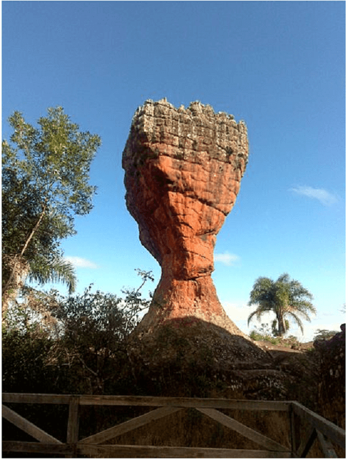
Esse exemplo mostra um tipo de rocha, o Arenito esculpido pela força do vento e das chuvas ao longo de milhões de anos. Esse alicerce de rocha sedimentar sofreu intemperismo com a exposição e o desgaste por milhares ou milhões de anos.
O transporte do material erodido das rochas é chamado de erosão e pode ser carregado para outro local e finalmente depositado como sedimento. O chão onde pisamos pode ter sido, no passado, montanha desgastada ou erodida dependendo do local no Planeta em que vivemos.
Veremos em detalhes cada um desses processos responsáveis por alterar a configuração do relevo terrestre.
Agora é com você!
Faça uma lista em seu caderno sobre o que já ouviu falar sobre esse assunto: intemperismo, erosão e seus tipos, deslizamentos de terra.
O que gostaria de saber mais?
Teste sua observação!
O que aconteceu com esse automóvel enferrujado sob o ponto de vista dos agentes externos do relevo?
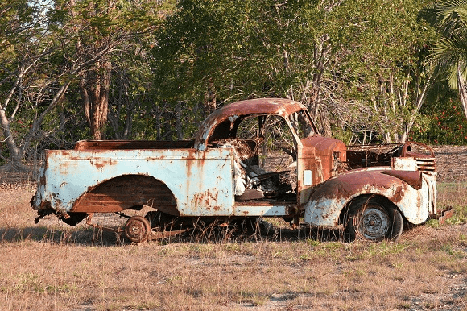
Teste seu conhecimento
Esse tipo de relevo chamado de falésia sempre apresentou esse formato? Quais agentes contribuíram para tal resultado?
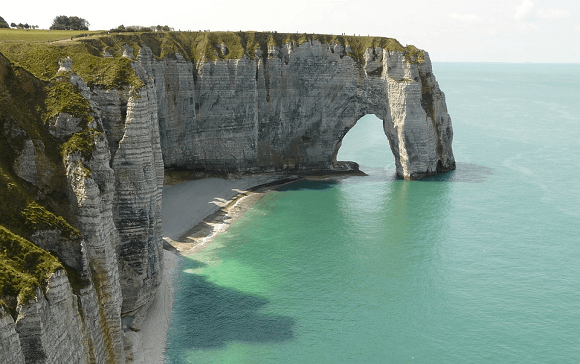
Questione a realidade!
- Como o intemperismo físico afeta a superfície da Terra?
- Como os processos químicos dissolvem as rochas?
- Qual o resultado do intemperismo?
- Quem é o responsável por levar o material intemperizado de um local para o outro?
- Como a ação do vento, água, gelo, e organismos vivos atuam na modificação das paisagens?
Intemperismo
É comum dizer que “nada resiste ao tempo”. Podemos acrescentar que nem mesmo as rochas, apesar de sua dureza e resistência.
Não há material que não seja suscetível (capaz ou passível de receber) ao intemperismo, também chamado de meteorização. A deterioração das rochas ou de qualquer coisa na Terra seria uma resposta desses materiais às mudanças de ambiente nas quais estão inseridas.
Estruturas metálicas, carros, granito, monumentos, podem enferrujar-se, enfraquecer-se ou esfacelar-se quando expostos à água ou gases da atmosfera, em um deserto, geleira ou região tropical.
Isso tudo é o intemperismo. Esse processo prepara a rocha para a erosão ao enfraquecê-la ou quebrá-la. Ele pode ser, basicamente, de dois tipos: intemperismo físico ou químico. No primeiro ocorrem mudanças físicas dos materiais da Terra, mas não mudam sua composição; Já no segundo caso, os minerais das rochas são quimicamente dissolvidos.
Os intemperismos físico e químico atuam juntos, reforçando um ao outro. Enquanto o físico quebra o material rochoso em pedaços menores, seu parceiro nesse processo, o químico, pode dissolvê-lo sem grandes problemas.
Fatores do intemperismo
Existem fatores que influenciam e controlam a forma de atuação do intemperismo.
O primeiro deles é o clima, representado pelas mudanças de temperaturas e na distribuição das chuvas. Depois temos o relevo, que dependendo da sua inclinação afeta diretamente a infiltração de água pluviais (chuvas). O tipo de fauna e flora também interfere no grau de intemperismo, pois eles fornecem matéria orgânica para relações químicas. O tipo de rocha matriz, devido a sua resistência aos processos intempéricos. E o tempo de exposição das rochas aos agentes externos. (Fonte: Teixeira (2009, adaptado).
Intemperismo físico
O intemperismo físico ou mecânico fratura a rocha em pequenos pedaços sem promover alteração química de seus minerais.
O granito, por exemplo, é uma rocha muito resistente, mas pode ser rompida pelas forças físicas como congelamento, variação da temperatura em áreas desérticas, liberação de pressão ou por meio da atividade orgânica, isto é, ligado a ação de seres vivos diretamente nas rochas.
A variação de temperatura, como um dos fatores do intemperismo, transforma as rochas na medida em que elas são aquecidas e depois resfriadas.
Em áreas desérticas a diferença de temperaturas entre o dia e a noite é muito alta, podendo variar em até 30º C ou até mais. (essa diferença é chamada de amplitude térmica).
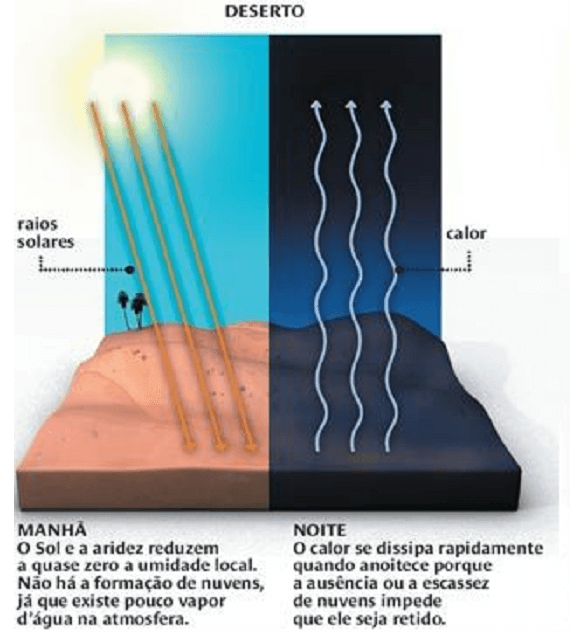
Essa alternância de calor gera uma tensão e causa uma fratura nas rochas, bem como a queima de florestas e o, intenso calor provoca expansão e contração nas rochas.
Já nas áreas de desertos frios, como o continente Antártico, à água congela e descongela de forma repetida nas juntas ou rachaduras das rochas.
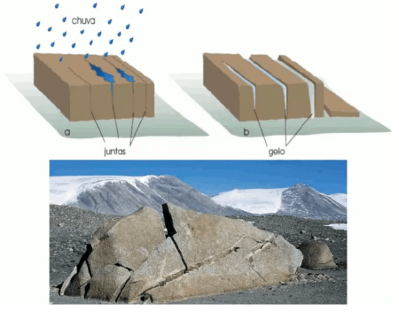
Na figura acima podemos observar o processo de abertura de fissuras, pois a água ao congelar aumenta seu volume (em cerca de 9%), se expande contra as paredes das rochas, causando as chamadas cunhas de gelo.
Outro fator do intemperismo está relacionado a atividades dos organismos vivos. O exemplo mais marcante diz respeito a pressão exercida pelas raízes das plantas, ao se infiltrarem nas rochas ocasionando fraturas. Também participam desse processo animais, plantas e bactérias. Animais que vivem em tocas, répteis ou roedores, dentre outros, misturam o solo e trazem material das profundezas para a superfície para sofrerem intemperismo. Já as bactérias, algas e fungos penetram nas fraturas e produzem ácidos responsáveis pela dissolução dos minerais, o material de que são feitas as rochas.
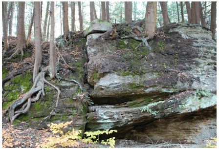
Além de fissuras e fraturas causadas por expansão do gelo ou variação de calor, temos o intemperismo por esfoliação. Trata-se de um processo de descamação das rochas tal como uma grande cebola ou quando grandes blocos são destacados da parede rochosa.
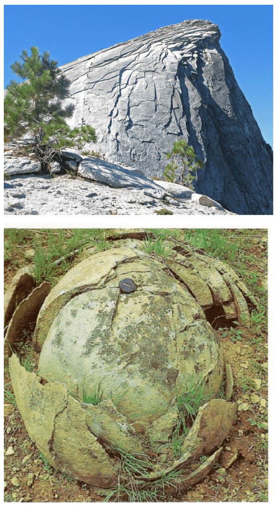
Resumindo: o intemperismo físico abre o caminho e facilita o intemperismo químico.
Teste seu conhecimento
Intemperismo químico
As rochas sofrem alterações químicas quando seus minerais entram em contato com a água e o ar, com dióxido de carbono e chuvas ácidas.
Elas mudam de composição e seus minerais são literalmente dissolvidos, tal como uma pedra de sal em contato com a água.
Além de dissolução, pode ocorrer a formação de novos minerais diferentes daqueles da rocha original.
O tipo de rocha vai determinar os efeitos do intemperismo químico. Alguns minerais como a calcita, que é composta por carbonato de cálcio, uma rocha sedimentar, pode se decompor completamente em água acidificada.
Como que a água se torna ácida?
Estamos acostumados com refrigerantes gaseificados, eles nada mais são do que água com gás sob pressão. Esse gás é e o dióxido de carbono (CO2) e quando combinado com a água forma o ácido carbônico. Quando abrimos a garrafa com o refrigerante o gás dissolvido efervesce (se transfere para o ar) e a bebida se torna “choca” e levemente ácida.
O material orgânico em decomposição também produz dióxido de carbono nos solos, dessa forma a água subterrânea é levemente ácida.
Em terrenos calcários, em consequência dessa acidez do solo, pode levar à formação dos chamados relevos cársticos, ou seja, a presença de cavernas.
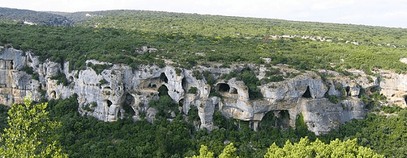
Como as cavernas são formadas?
A água próxima a superfície ou no subsolo pode dissolver o calcário e formar cavidades, especialmente se a água for ácida. O sistema de cavernas é, geralmente, formado a partir do calcário porque outros tipos de rocha não são facilmente dissolvidos. Observe a figura abaixo:
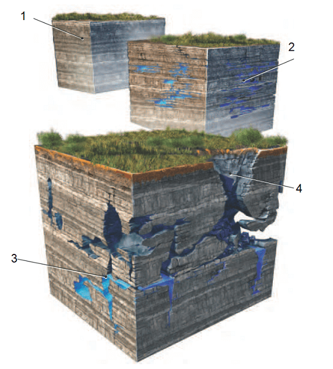
O número 1 representa a rocha calcário constituída, principalmente, pelo mineral calcita (carbonato de cálcio), relativamente solúvel em água ácida. A água da chuva é um pouco ácida poque ela reage com dióxido de carbono, enxofre e material orgânico. Quando a água reage com a calcita no calcário, ela o dissolve. Ainda pode ser ajudada pelos ácidos produzidos pelos micróbios no fundo do solo, como já visto.
O número 2 indica que a água subterrânea dissolve o calcário, muitas vezes começando ao longo de fraturas e limites entre as camadas e, em seguida, vai progressivamente ampliando-os ao longo do tempo. As cavidades abertas tornam-se maiores e mais extensas, permitindo que mais água passe, o que acelera a dissolução e alargamento. Se as aberturas se tornam muito grandes, elas podem acomodar piscinas subterrâneas ou córregos.
O número 3 aponta que muitas cavernas se formam abaixo do lençol freático e o processo pode levar milhões de anos. O resultado é uma rede de cavernas interconectadas através de túneis de calcário. Se houver um rompimento dessa piscina de água subterrânea, a água pode ser drenada para fora dos túneis e secar parte do sistema de cavernas.
E por fim, o número 4 mostra que se parte do teto da caverna desabar, ela será exposta ao ar e secará ainda mais. Essa quebra do telhado forma o chamado “sumidouro” na superfície.
As cavernas são ótimos e interessantes locais para se explorar. Algumas possuem passagens estreitas conectando outras câmaras ou permitindo encontrar imensas cavidades.
As formas mais conhecidas das cavernas estão relacionadas a dissolução e precipitação da calcita formando as estalagmites e as estalactites.
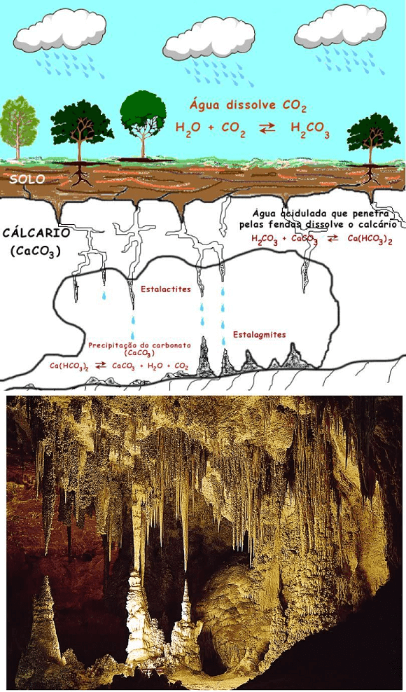
Além das cavernas, as construções antigas não escapam do poder do intemperismo químico. Veja:
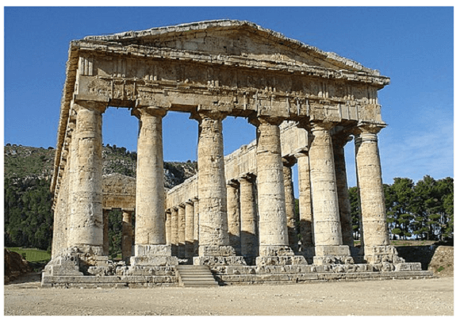
Teste seu conhecimento
Quais fatores abaixo não contribuem para o aumento das taxas de intemperismo?
Aplique seu conhecimento
O que ocorre com o intemperismo em climas nas regiões tropicais?
Intemperismo e erosão
Vimos que o vulcanismo e os processos tectônicos formaram as montanhas e a decomposição física e química provocada pela chuva, vento, gelo, calor, ou seja, pelo intemperismo, alteraram todo o material rochoso da Terra.
Agora temos que nos concentrar em quem leva esses materiais para outros locais e os depositam, isto é, a erosão.
A erosão, portanto, trabalha junto com o intemperismo, desgasta, transporta as rochas alteradas e novas rochas que antes estavam escondidas são expostas e, assim, renovam o ciclo de alteração das paisagens.
Tipos de erosão
Vamos recapitular que o processo de intemperismo quebra as rochas e o solo em pedaços menores, mas não move eles. A remoção desse material intemperizado é de responsabilidade da erosão.
Isso pode ser feito através de diversos agentes como o vento, água corrente, geleiras, chuvas, correntes oceânicas, ondas do mar, dentre outros. Os principais estão na figura abaixo:
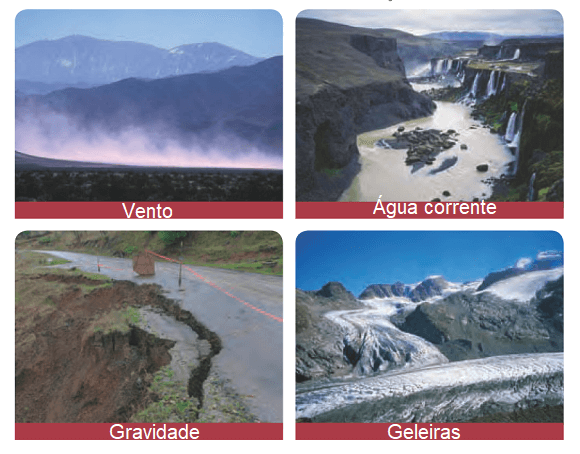
Quando vemos nossas calçadas repletas de lama vindas de um morro acima, por exemplo, temos aí o transporte e, após isso, a deposição.
Erosão hídrica
É a gravidade que atua empurrando esses materiais encosta abaixo. A água é um poderoso agente de erosão. Os rios, por exemplo, podem moldar toda uma paisagem e carregarem toneladas de sedimentos, como os rios Amazonas no Brasil, o Nilo no Egito ou o Yangtzé na China. Vejamos essa alteração na ilustração abaixo:
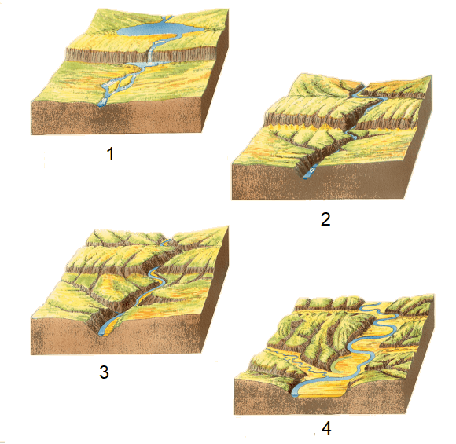
Na figura acima vemos um determinado rio (número 1) onde o fluxo de água é mais rápido nas cachoeiras e corredeiras. Logo esses segmentos mais íngremes (inclinado) do rio são rapidamente corroídos. Onde o fluxo do rio diminui (por exemplo, em lagoas e lagos), o sedimento é depositado.
No número 2 as cachoeiras e corredeiras erodiram até que sua declividade (inclinação para baixo) ficasse mais próxima da declividade média do rio. Já os lagos e lagoas foram drenados e desapareceram.
O número 3 mostra o rio uma expansão lateral, erodindo essas encostas e criando um caminho curvo. Começa um depósito de sedimentos clásticos (areia, cascalho ou lama) e se acumula no interior de cada curva. É o chamado aluvião.
No número 4, à medida que o fluxo continua a erodir as margens, o canal desenvolve meandros extensos.
Com o tempo, essas curvas desde a nascente até onde se desemboca o rio (foz) forma uma planície de inundação, isto é, um terreno plano entre penhascos íngremes. O rio atinge sua maturidade.
Aspectos destrutivos da erosão em águas correntes
Outro aspecto da erosão causada por enxurradas, rios ou córregos ou por mau uso do solo estão relacionados à ravina e as voçorocas.
As ravinas ocorrem quando a água corrente erode pequenos canais nas encostas dos córregos e riachos. Elas são normalmente classificadas como de menor escala do que as voçorocas, vales e cânions.
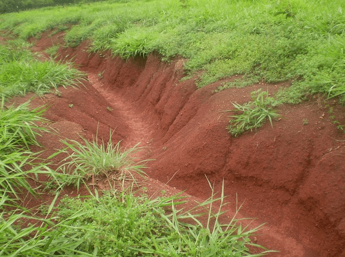
Quando esses canais erodidos pelas ravinas se tornam mais profundos e extensos, eles evoluem para as voçorocas.
As voçorocas ou boçorocas são geologicamente um fenômeno que consiste na formação de grandes buracos de erosão causados pela água da chuva e intempéries em solos onde a vegetação não protege mais o solo, que fica cascalhento e suscetível de carregamento por enxurradas. Ela torna o solo pobre, seco, quimicamente morto e nada fecundo.
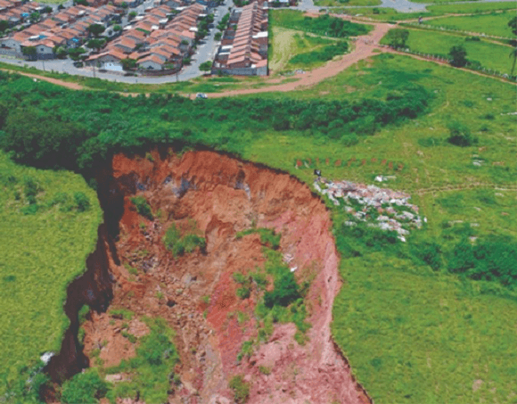
Da mesma forma temos a erosão marinha realizada pelo movimento constante das ondas do mar provocando a abrasão dos paredões rochosos no litoral, com a formação das falésias. Essa erosão forma as praias, as restingas e os tômbolos (veremos no capítulo sobre as formas do relevo marinho).
Erosão Glacial
O Planeta já registrou diversas eras do gelo, desde a Pangeia até o quaternário, sendo que a última era glacial terminou há cerca de 12 mil anos.
O que é uma geleira?
Geleiras são massas continentais de gelo de limites definidos, que se movimentam pela ação da gravidade. Originam-se pela acumulação de neve e sua compactação por pressão transformando-a em gelo (Teixeira, 2009, p.216).
As marcas das geleiras estão visíveis nas paisagens e seus efeitos erosivos abrange uma escala elevada.
As geleiras podem carregar toneladas de sedimentos através verdadeiros rios de gelo levando imensas rochas e detritos à longas distâncias. Esses detritos arranham a superfície das rochas, esculpem vales em forma de U, chamado Fiordes, principalmente na região da Escandinávia (Suécia, Noruega e Dinamarca). Veja uma imagem de uma geleira na Noruega.
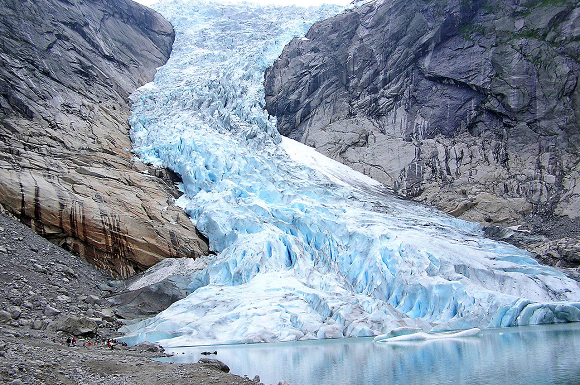
As geleiras têm uma imensa capacidade de erodir a rocha dura, gerando toneladas de sedimentos, geralmente um material escuro, uma mistura de gelo com rochas e lama chamado de morena nas áreas de deposição onde o gelo desemboca nas partes baixas do terreno. Veja na ilustração abaixo:
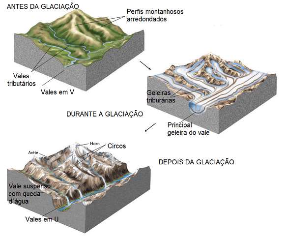
Na figura acima, vemos que antes da glaciação, um rio montanhoso que entalha um vale em for de “V”. Durante a glaciação, a ação do gelo arrancando e rasgando as rochas produz uma forma arredondada chamado de circo. À medida que a geleira do vale se move para baixo, ela escava um novo vale ou aprofunda o vale existente, originando um vale em U, com paredes abruptas, diferentes dos vales erodidos pelos rios montanhosos.
Após ter visto o processo erosivo da ação da água e das geleiras, veremos como a ação do vento molda as paisagens terrestres.
Erosão eólica
O que é o vento?
De modo geral, o vento é um fluxo natural de ar em movimento, paralelo à superfície de rotação da Terra. Ou seja, existe vento causado pelo movimento de rotação terrestre e pela diferença de pressão e temperatura na atmosfera. (Veja capítulo sobre o clima terrestre).
É comum utilizar o termo eólica para se referir ao trabalho do vento, em referência à mitologia grega em que Éolo era o guardião dos ventos e o senhor da ilha Eólia, na Odisseia de Homero.
Voltando para o tempo presente, a ação do vento é um importante agente de erosão, assim como a água, entretanto de modo um pouco mais lento.
Os ventos podem mover enormes quantidade de area, partículas menores chamadas silte e pó sobre grandes regiões do globo.
No que diz respeito a erosão, os ventos moldam á superfície terrestre principalmente em zonas áridas onde não há umidade. Só depois que o intemperismo físico e químico atuou que o vento pode deslocar essas partículas pelo ar.
O vento desgasta as rochas e arranca areia desagregadas e depois as lança sobre outras rochas, processo esse chamado de abrasão.
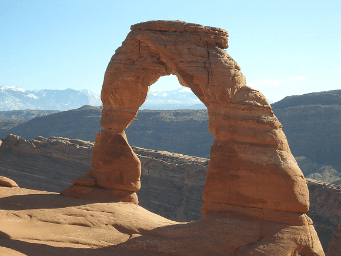
Já quando o vento transporta areia por longas distâncias e as deposita, acaba por formar dunas.
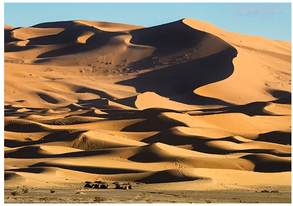
A maioria das dunas é encontrada em climas secos, como desertos, poque o vento não pode transportar material úmido. Deve haver um suprimento de areia solta disponível no local para esse tipo de formação. Ela também apresenta uma angulação devido à direção dos ventos.
Pode haver também dunas nas regiões costeiras devido a abundância de areia que é transportada pelo vento rapidamente, sendo que somente em outro momento a vegetação e o solo passa a cobri-la. Nesse caso em específico, em climas úmidos também pode ocorrer dunas.
Além das paisagens formadas pela abrasão e pela deposição, temos os efeitos destrutivos da erosão eólica, principalmente no solo.
Um dos métodos utilizado nas áreas de cultivo para reduzir a perda da camada superior do solo na agricultura consiste na construção de barreiras de vento. Os quebra-ventos, como são chamados, são árvores plantadas de forma perpendicular uma ao lado da outra com o objetivo de formar uma fila de árvores ao longo das bordas de uma plantação. Essas barreiras ainda podem ajudar na conservação da umidade, barrar a neve dependendo do tipo de clima ou proteger a plantação dos efeitos do vento.
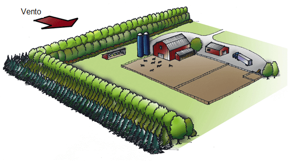
Outros seres vivos também participam do processo erosivo como plantas e animais que vivem movendo a superfície de um local a outro. O exemplo de animais que se enterram no solo, atividades humanas de grandes escavações minerais, construção de rodovias, dentre inúmeras outras atividades.
Dependendo da organização do território realizada pelos homens, o processo erosivo pode ser evitado ou agravado e produzir efeitos danosos a sociedade.
Veremos com mais detalhes os impactos da atividade humana no meio geográfico no capítulo sobre a questão ambiental.
Teste seu conhecimento
Como o tempo influencia o processo de intemperismo?
Teste seu conhecimento
Que agente de erosão formou esta estrutura e qual processo ocorreu?
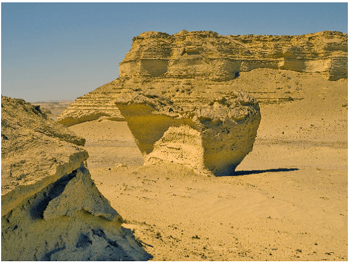
Teste seu conhecimento
Trata-se de uma erosão realizada pela ação de córregos e enxurradas. São normalmente classificadas como de menor escala do que as voçorocas, vales e cânions.
Teste seu conhecimento
Sedimentação diz respeito:
Teste seu conhecimento
O intemperismo biológico resulta da decomposição da rocha por processos mecânicos produzidos por vegetais através de suas raízes, escavação de roedores ou quimicamente por meio da ação de algas e bactérias que adentram nas fraturas das rochas.
Não existe pergunta boba! A Ciência é feita de perguntas!
P: Qual a relação entre intemperismo e clima?
R: O clima influencia diretamente o intemperismo devido a temperatura e em relação a espessura do solo. Em grandes altitudes, uma montanha por exemplo, o intemperismo químico é baixo, uma vez que devido a baixa temperatura torna-se dificil para a água dissolver os minerais das rochas. O que favorece o intemperismo físico pelo gelo. Se há pouca chuva, pouca água percorrendo as rochas. Em regiões desérticas há muito intemperismo físico, já em regiões tropicais o intemperismo químico é mais forte. Também se o relevo é mais íngreme (inclinado) aprofunda a erosão, se o relevo é mais suave, mais plano, favorece o intemperismo químico.
P: Qual é o produto do intemperismo?
R: Depois que o intemperismo químico e física atuam para erodir uma superfície rochosa, partes desse material é carregado pelas correntes de água, geleiras ou pelo vento. Outra parte permanece no local seja em planícies suaves ou em encostas moderadas com parte ainda da rocha matriz, rocha que pode ser sedimentar, magmática ou metamórfica. Essa superfície que se assemelha com o terreno da Lua ainda não tem matéria orgânica suficiente para ser chamada de solo. É o que os geólogos chamam de regolito. Com o tempo, uma fina camada de restos de animais, plantas e bactérias formarão o solo. O solo é um dos principais produtos do intemperismo (temos um capítulo específico sobre solos).
P: Os deslizamentos de Terra em uma encosta têm a ver com o intemperismo?
R: Uma vez que o intemperismo alterou e deixou “afrouxado” o solo, a gravidade se encarrega de empurrá-lo ladeira abaixo. Também estão relacionados aos problemas dos deslizamentos nas encostas o clima, a topografia (forma, inclinação e altitude do terreno), o tipo de rocha e solo e a maneira de ocupação da área pela população do entorno.
Desafio em dupla: Produção de recomendações para visita em uma caverna.
Leia o texto abaixo sobre a gruta da Lapinha em Minas Gerais:
A gruta da Lapinha, localizada no município de Lagoa Santa (MG), possui 40 metros de profundidade e 511 metros de extensão abertos à visitação pública. A gruta foi formada a partir de rochas calcárias formadas pelos restos marinhos do fundo do mar raso da bacia do rio das Velhas, de restos que foram acumulados em camadas superpostas e trabalhados pela erosão provocada pelas correntes marinhas e aéreas.
A gruta, de grande beleza cênica, foi descoberta por volta de 1835 pelo naturalista dinamarquês Peter Wilhelm Lund, conhecido como o pai da paleontologia brasileira, que pesquisou toda a região. Em 1840, Lund descobriu restos de fósseis do primeiro homem americano, como também animais pré-históricos que viveram há 25 mil anos, dentre eles o tigre dente de sabre, a preguiça gigante e o tatu gigante. No espaço cultural anexo à gruta, uma réplica de uma preguiça gigante está em exposição.
Fonte: https://www.mg.gov.br/ conteudo/conheca-minas/turismo/gruta-da-lapinha
Instruções
Em dupla, reflita e escreva cada um em seu caderno, um texto explicando para os visitantes da gruta o processo de formação de cavernas de calcário utilizando suas próprias palavras e alguns dos conceitos vistos na aula de hoje.
- Relevo; agentes externos do relevo; água, gelo, vento, gravidade;
- Intemperismo: físico e químico;
- Erosão: hídrica, marinha, glacial, eólica, ravina, voçoroca, deslizamento; sedimentação.

Para saber mais:
Referências bibliográficas
BORRERO, Francisco (et all). Earth Science: Geology, the Environment, and the Universe. Columbus, McGraw-Hill Companies, 2008.
PRESS, F.; SIEVER, R.; GROTZINGER, J.; JORDAN, T.H. Para Entender a Terra. 4a edição. Tradução: MENEGAT, R. Porto Alegre, Bookman. 2006.
REYNOLDS, Stephen J (et all.). Exploring physical geography. 2.ed. New York, NY: McGraw-Hill, 2017.
STRAHLER, Alan. Introducing Physical Geography. 6.ed. Wiley, New York, 2013.
TEIXEIRA, W.; FAIRCHILD, T. R.; TOLEDO, M. C. M.; TAIOLI, F. Decifrando a Terra. 2ª ed. São Paulo: Companhia Editora Nacional, 2009.
WICANDER, Reed; MONROE, James S. Fundamentos de Geologia. São Paulo: Cengage Learning, 2009.